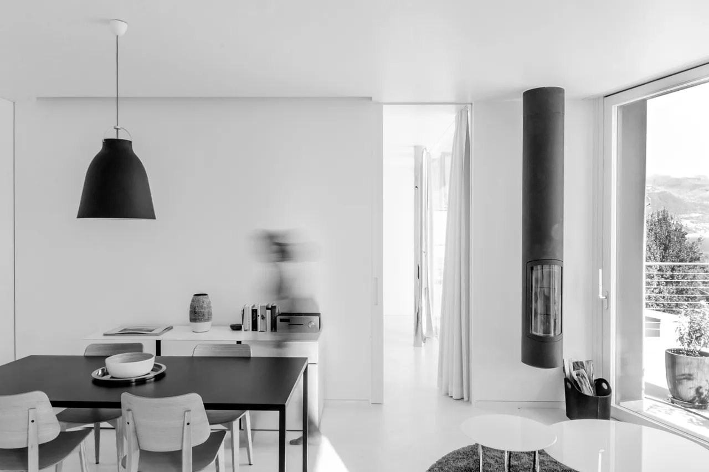
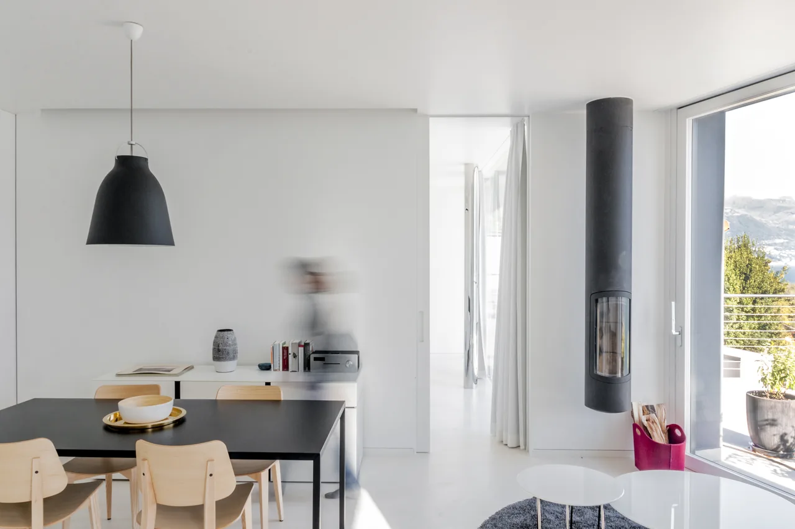
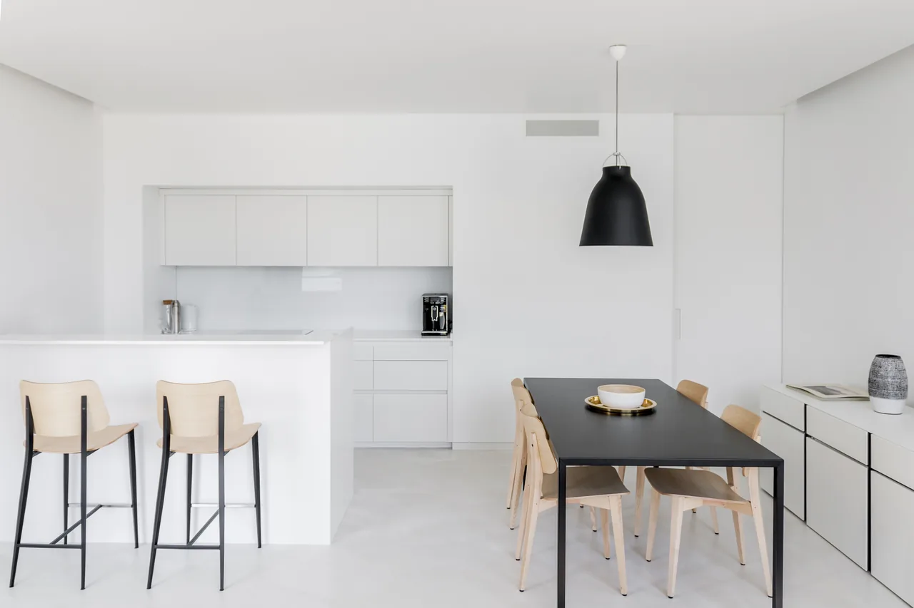
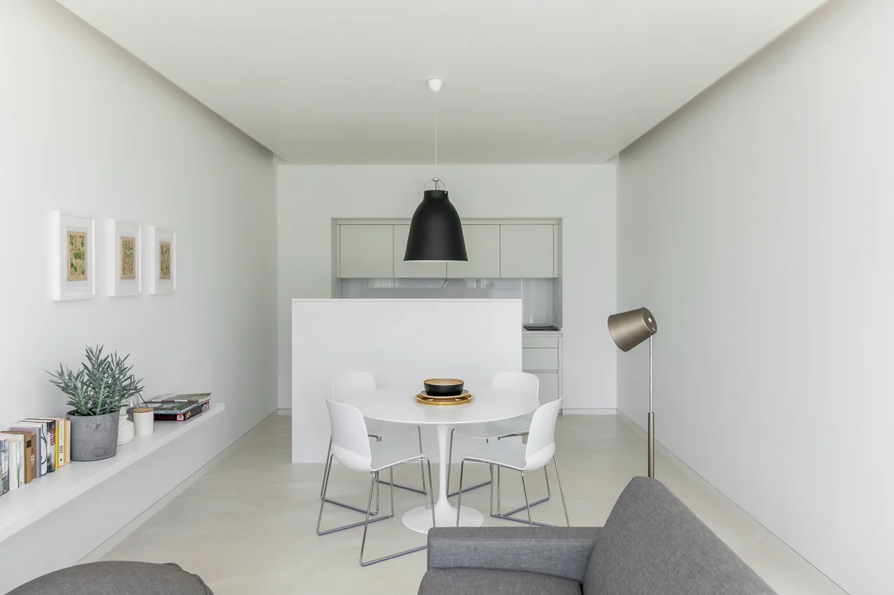
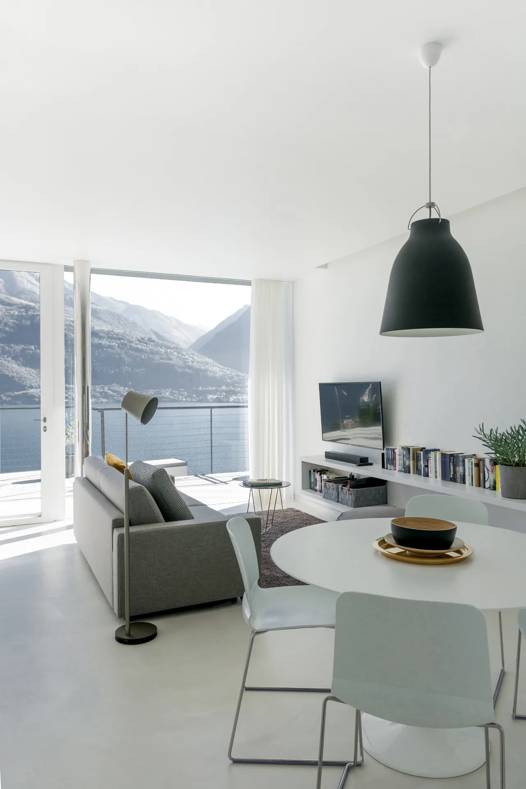
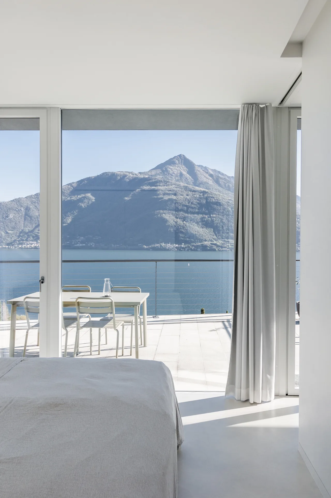
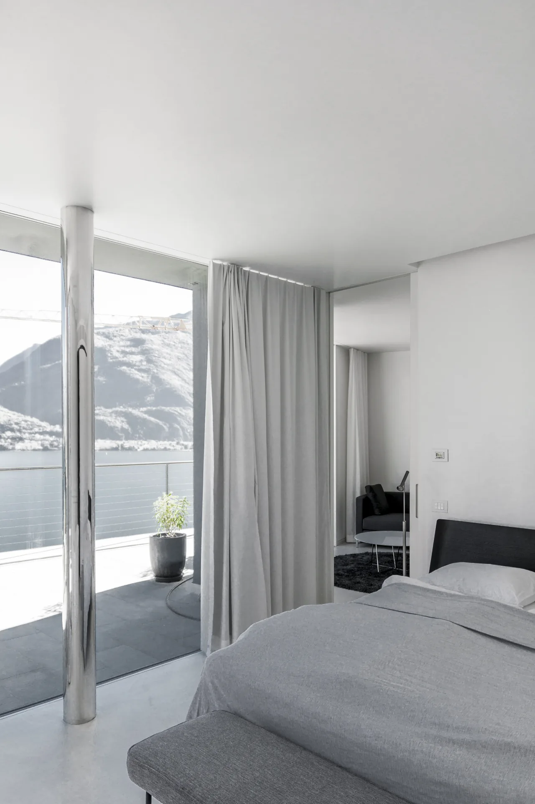
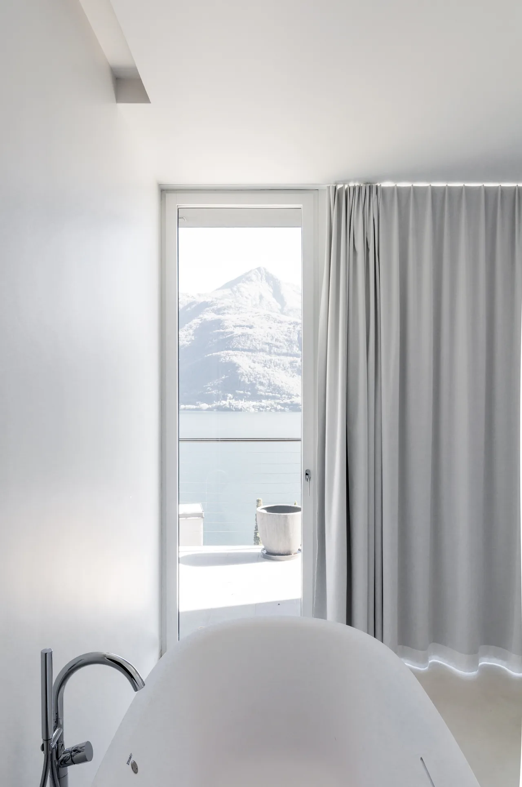
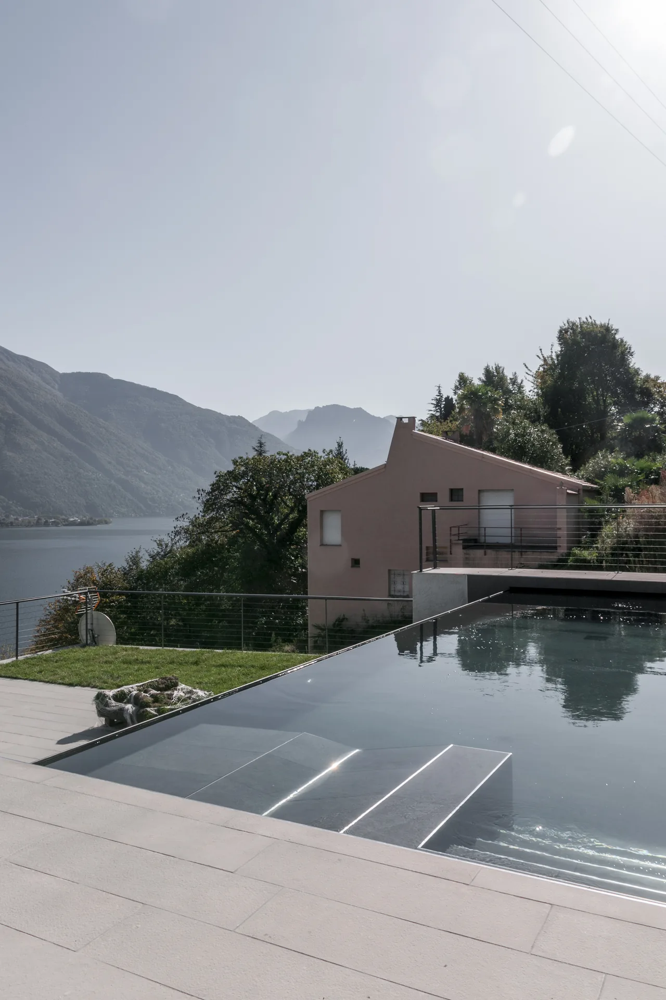
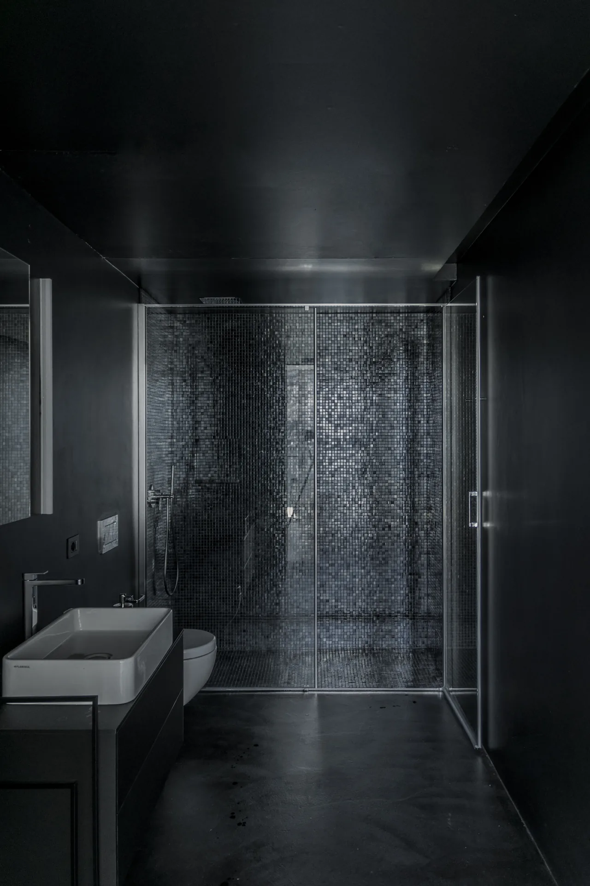

Innenausbau, Comer See IT
Der Ausbau der beiden Wohnungen wurde bewusst auf eine reduzierte Farbgebung abgestimmt. Wände, Böden und Decken sind in Weiss gehalten, während gezielte Farbakzente im Mobiliar dem Interieur Charakter verleihen. Die zurückhaltende Gestaltung schafft Ruhe und lässt dem eigentlichen Hauptprotagonisten – der spektakulären Aussicht auf den Comer See – den nötigen Raum. Architektur und Einrichtung treten bewusst in den Hintergrund und setzen den Blick auf See und Berge wirkungsvoll in Szene.








